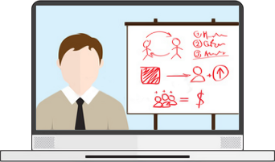
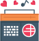
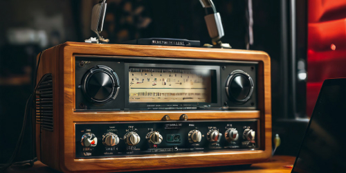

Create your own radio station!
it`s simple!
it`s much harder to do it right
More than 500 new radio stations appear on online platforms such as YouTube every month. And only a few of them become popular and bring significant profit. What's the secret? What is the formula for success? Find out at the upcoming two-day free intensive!
what awaits you in our intensive?
2 free full-fledged training webinars, where:

What is online radio and why is it needed?
Online radio has revolutionized the way we consume audio content. With just a click or a tap, listeners can access a diverse array of music, talk shows, news, and podcasts from around the globe. Unlike traditional radio, online radio offers a virtually limitless selection of stations catering to every taste and interest
Whether you're into pop, rock, jazz, classical, or any other genre or even podcasts, there's an online radio station for you. Online radio also provides opportunities for independent artists and niche genres to reach a wider audience
Furthermore, the convenience of online radio cannot be overstated. It's accessible anytime, anywhere, whether you're at home, work, or on the go. With mobile apps and streaming services, listeners can enjoy their favorite stations on smartphones, tablets, or computers with an internet connection
We will teach you how to create an attractive online radio for users and the right website for search engines and advise you on how to get it to the first pages, beating all competitors.
After completing the training you will be able to!

Bonuses and gifts are provided for all intensive participants. Click the button below, take part in the webinars and collect your prize upon completion of the training!

The first webinar will be:
September 10 at 20:00 GTM+0
Hurry up to register, the number of places is limited!